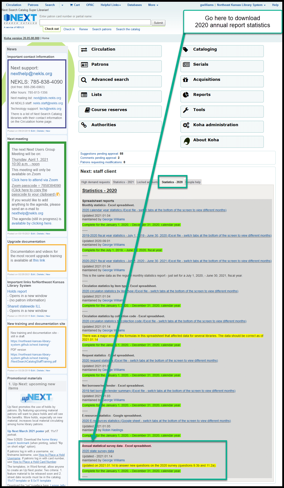

Annual statistical data¶
2020 Annual statistical data¶
The 2020 data can be found on the Next Search Catalog home page on the statistics tab.

This spreadsheet answers the following questions for the annual state statistical survey:
- Question 2.2a - Number of users
- Data comes from the “Monthly statistics” spreadsheet “YTD totals tab” - column Q.
- Patrons whose accounts had been expired for more than 3 years and had no issues that would have prevented their accounts from being automatically deleted, were automatically deleted twice in 2020. This fulfills the “Inactive patron accounts should have been purged within the past three (3) years” note added to that question.
- The report that gathers this data counts the number of patrons in the borrowers table in the system on January 1, 2021.
- This year, the report was generated automatically between midnight and 2:00 a.m. on January 1, 2021.
- Question 9.1a - books owned at start of 2020
- Data gathered from Report 2867.
- This report counts items in the items table based on item type and collection code that were in the database on January 1, 2021.
- This year, the report was generated automatically between midnight and 2:00 a.m. on January 1, 2021.
- Question 9.1b - books added during 2020
- Data gathered from Report 2868.
- The “BOOKS_A” column of this report counts items in the items and deleted items tables based on item type and collection code where the item’s dateaccessioned field shows 2020 as the year. By counting items in the deleted items table, this report takes into account items that may have been added and deleted during 2020 (i.e. if a book was added in January, was then checked out and kept long overdue, was later marked lost, and was eventually deleted in June, that book will still be counted as being added in 2020).
- This year, the report was generated automatically between midnight and 2:00 a.m. on January 1, 2021.
- Question 9.1c - books deleted during 2020
- Data gathered from Report 2868.
- The “BOOKS_D” column of this report counts items that were added to the deleted item table based on item type and collection code where the deleted item’s timestamp shows 2020 as the year.
- This year, the report was generated automatically between midnight and 2:00 a.m. on January 1, 2021.
- Question 9.2 - total audio at end of 2020
- Data gathered from Report 2868.
- The “AUDIO_T” column of this report counts items in the items table by item type (if the item is one of the audiobook item types) or by collection code (if the item type is not an audiobook item type but the collection code is BOOKONCASS, BOOKONCD, or BOOKONMP).
- This year, the report was generated automatically between midnight and 2:00 a.m. on January 1, 2021.
- Question 9.3 - total video at end of 2020
- Data gathered from Report 2868.
- The “VIDEO_T” column of this report counts items in the items table by item type (if the item is one of the video item types) or by collection code (if the item type is not an audiobook item type but the collection code is not one of the video item types but the collection code is BLU-RAY, COMBO, DVD, TVSERIES, or VHS).
- This year, the report was generated automatically between midnight and 2:00 a.m. on January 1, 2021.
- Question 9.3b - Total DVDs
- Data gathered on the fly.
- The report that generated this data caounted items in the item table by item type (where the item had one of the video item types) and collection code (where the collection code was BLU-RAY, COMBO, DVD, or TVSERIES).
- Question 9.5 - total of all other materials at end of 2020
- Data gathered from Report 2868.
- This data is generated by taking the total of all items and subtracting the results of questions 9.1b, 9.1c, 9.2, and 9.3a as determined by the other queries in this report.
- This year, the report was generated automatically between midnight and 2:00 a.m. on January 1, 2021.
- Question 11.1 - circulation of adult materials
- Data comes from the “Monthly statistics” spreadsheet “YTD totals tab” - column M
- Data to build this answer was calculated monthly in the “2020 calendar year statistics” spreadsheet to make sure the data was as accurate as possible.
- Question 11.2 - circulation of non-adult materials
- Data comes from the “Monthly statistics” spreadsheet “YTD totals tab” - column N
- Data to build this answer was calculated monthly in the “2020 calendar year statistics” spreadsheet to make sure the data was as accurate as possible.
- Question 11.2a - circulation of DVDs
- This year the data came from the “Circulation statistics by collection code” spreadsheet - next year it will be in the “Monthly statistics” spreadsheet
- Question 11.5 - NExpress ILLs borrowerd from other NExpress libraries
- Data comes from the “Monthly statistics” spreadsheet “YTD totals tab” - column V
- Data to build this answer was calculated monthly in the “2020 calendar year statistics” spreadsheet to make sure the data was as accurate as possible.
- Question 11.9 - NExpress ILLs loaned to other NExpress libraries
- Data comes from the “Monthly statistics” spreadsheet “YTD totals tab” - column U
- Data to build this answer was calculated monthly in the “2020 calendar year statistics” spreadsheet to make sure the data was as accurate as possible.